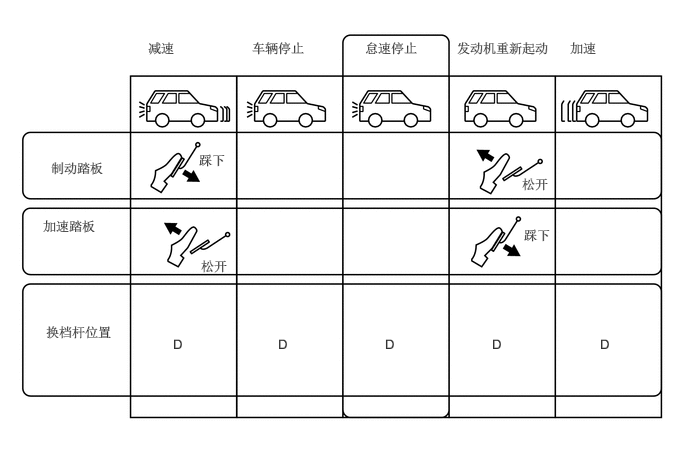

概要
为实现低排放并提高燃油经济性，研发了启停系统。
车辆停止时，如车辆在遇到红色交通灯而停止时，启停系统可自动停止发动机。起步时，发动机会自动重新起动，驾驶员无需进行任何额外的操作。

启停系统由发动机启停 ECU、备用增压转换器和串联式双螺线管起动机总成组成。
通过采用串联式双螺线管起动机总成，即使在发动机由于惯性作用旋转的情况下仍可起动发动机。
根据各种传感器、开关和 ECM 的信号，发动机启停 ECU 控制发动机的停机和起动。
发动机停机时，ECM 存储曲轴转角。这可用于判断在下次重新起动发动机时要喷入燃油并点火的气缸。这样可缩短重新起动发动机所需的时间。
为了管理起动机总成的使用寿命，发动机启停 ECU 计算起动机操作次数。如果次数超过阈值，则 ECU 使启停取消指示灯闪烁以提醒驾驶员需要进行更换。
更换起动机总成后，需要清除起动机总成操作次数记录。有关详情，请参考修理手册。
怠速停止期间，带电磁阀的油泵总成工作以确保稳定的 ATF 压力，从而实现平稳起步。
配备有上坡起步辅助功能，在怠速停止后重新起动发动机时，可对坡路上的平稳起动起辅助作用。防滑控制 ECU 可保持制动液压，直到产生足够的驱动力。
即使通过制动保持功能停止车辆，此时仍将进行怠速停止。这样便延长了怠速停止时间，从而极大地减少了油耗量。
与进气口喷射型发动机相比，通过在直接喷射 4 行程汽油发动机高级版 (D-4S) 发动机上使用启停系统，缩短了发动机重新起动的时间。
通过使用组合仪表总成内的多信息显示屏、启停指示灯及启停取消指示灯，可提供启停系统的操作条件（例如，进行怠速停止的时间）及各种建议和警告。
配备有可在特定条件下禁止启停系统控制的操作限制，以在使用非专用蓄电池时对蓄电池予以保护。
通过使用高性能蓄电池和高精度蓄电池传感器（蓄电池状态传感器总成），延长了达到禁止怠速停止阈值的时间并扩大了怠速停止操作的允许范围。
使用方向盘装饰盖上的方向盘装饰盖开关或按住启停系统取消开关（电动驻车制动开关总成），可在“Standard”和“Extended（启停系统享有优先权）”之间切换空调运行时启停的操作时间，从而使用户选择偏好的设置。